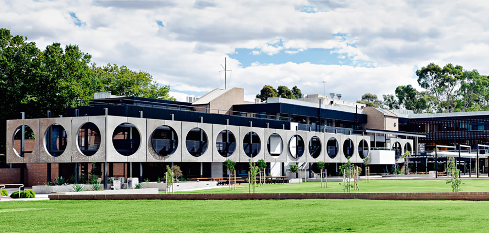
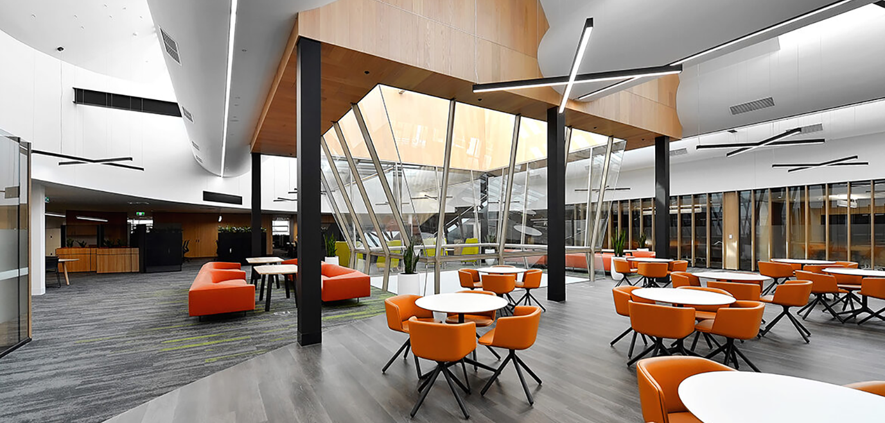

Deakin University, Waurn Ponds campus
Artifical Intelligence at Deakin University


Our group targets a broad spectrum of fundamental questions and emerging challenges in the development of Data-driven Decision-making techniques to extract valuable knowledge from this data, based on fast, effective and scalable data analysis and machine learning algorithms, which are at the heart of our research interests focusing on descriptive, predictive, and prescriptive analytics of large-scale data. We place great emphasis on building and deploying prototypes, and we experimentally validate our research ideas.

If you are looking for a postdoctoral opportunity in Machine Learning and currently in Australia, we are looking for an Associate Research Fellow (Machine Learning). You must have a strong background in Machine/Deep Learning and good publication track record. Please submit your application ASAP. Application closes on 8 August 2022.

Interested in a PhD Position in Machine Learning/Data Mining? We have a fully funded PhD scholarship. Please feel free to drop us a line. Here is an awesome video of Deakin University located in the beautiful city of Geelong.